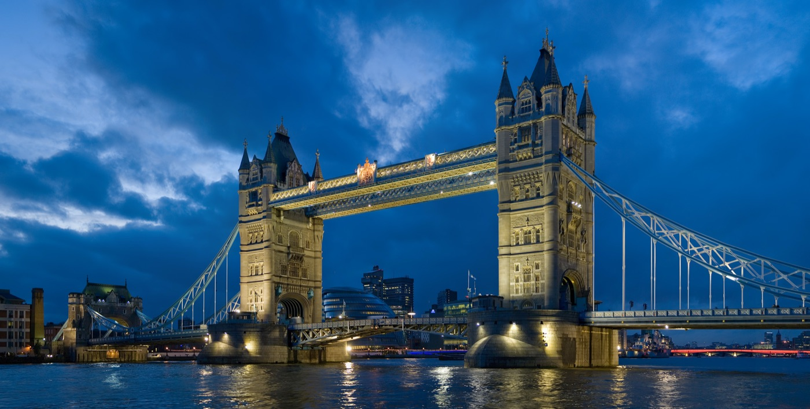
Una fortezza di mille anni, il ponte più fotografato del mondo e i grattacieli della City. Tutto a un quarto d'ora a piedi dal nostro hotel.
Perché andarci
In poche strade si passa dalla Torre dove venivano rinchiusi i nemici del re ai grattacieli di vetro della finanza, fino ai mercati dell'East End dove ogni domenica si mangia il mondo.
È la zona in cui dormiamo, quindi la vivremo a tutte le ore: la mattina presto, quando la Torre apre e la luce entra tra le colonne di Trinity Square; il tardo pomeriggio, quando dallo Sky Garden si vede accendersi la città; la sera, quando Brick Lane si riempie di gente e di profumo di curry.
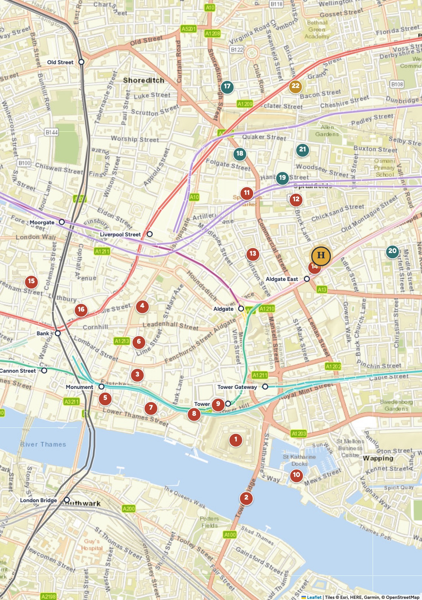
La mappa
Gli stessi luoghi sono sulla mappa online del viaggio, con le linee della metro e il percorso fino a ognuno: felicevitulano.github.io/londra-2027. Il filtro "Sab 6" mostra la giornata in questo quartiere.
Orientarsi
Il fiume e la Torre. A sud, lungo il Tamigi, ci sono la fortezza, il ponte e la darsena di St Katharine Docks. È la Londra delle cartoline, ed è sempre piena.
La City. Il "Square Mile" è la città romana e medievale, oggi il distretto della finanza: chiese di Wren schiacciate tra grattacieli con i soprannomi, il Walkie Talkie, il Gherkin, lo Scalpel. Dal lunedì al venerdì è un formicaio; il sabato e la domenica è quasi deserta, con molti negozi chiusi, ed è il momento migliore per fotografarla.
L'East End. A nord e a est dell'hotel cominciano Aldgate, Whitechapel e Spitalfields: per secoli il quartiere degli immigrati (ugonotti, ebrei, poi bengalesi), oggi mercati, street art e il curry di Brick Lane.
Tempi a passo di famiglia, stimati sulla mappa.
Dal 6 al 9 febbraio il sole tramonta tra le 16:59 e le 17:04, e alle 17:30 è notte. Le visite all'aperto vanno fatte entro il pomeriggio; il tramonto conviene guardarlo dall'alto, da Sky Garden o Horizon 22.
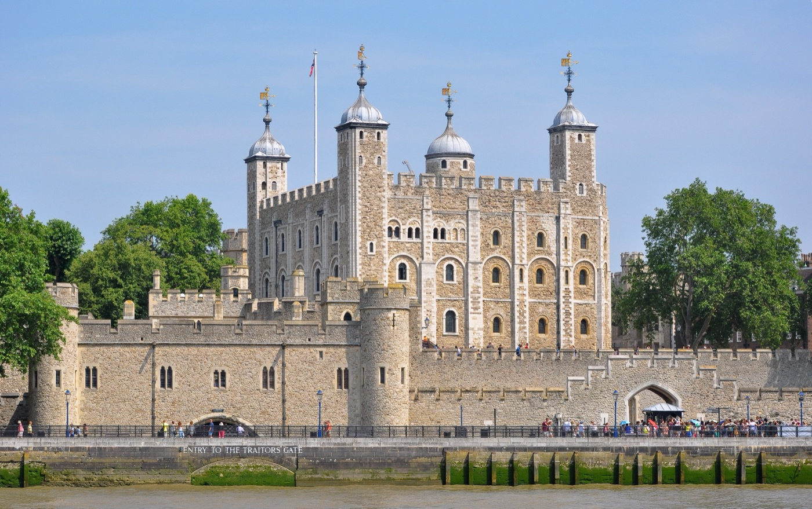
Top sight · 1
Fortezza, palazzo reale, prigione, zecca, zoo: in quasi mille anni la Torre è stata tutto, e oggi custodisce la collezione di gioielli più famosa del mondo.
Guglielmo il Conquistatore fece costruire la White Tower, la torre bianca al centro, dopo aver conquistato l'Inghilterra nel 1066: doveva far capire ai londinesi chi comandava. Intorno sono cresciute due cerchie di mura, ventuno torri e un fossato. Qui sono state imprigionate e giustiziate due regine, Anna Bolena e Caterina Howard, e qui sparirono i due "principi nella torre", i nipoti di Riccardo III.
I prigionieri più importanti arrivavano in barca dal Tamigi, attraverso la Traitors' Gate, la porta dei traditori, che si vede ancora sotto la St Thomas's Tower. Oggi nella Torre vivono una trentina di Yeoman Warder con le loro famiglie: è un quartiere vero, con un pub riservato agli abitanti.
Per sei secoli la Torre ha ospitato lo zoo del re: leoni, elefanti e perfino un orso polare, regalato dal re di Norvegia nel 1252, che pescava nel Tamigi legato a una catena. Ogni sera, da circa 700 anni, la Torre viene chiusa con la Ceremony of the Keys, alle 21:53 in punto.
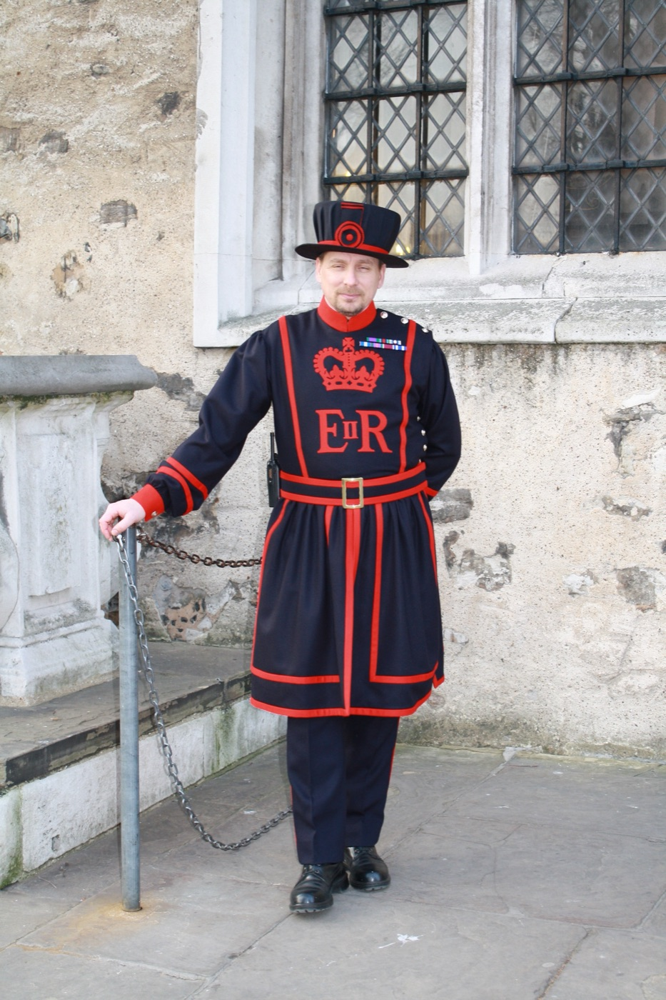
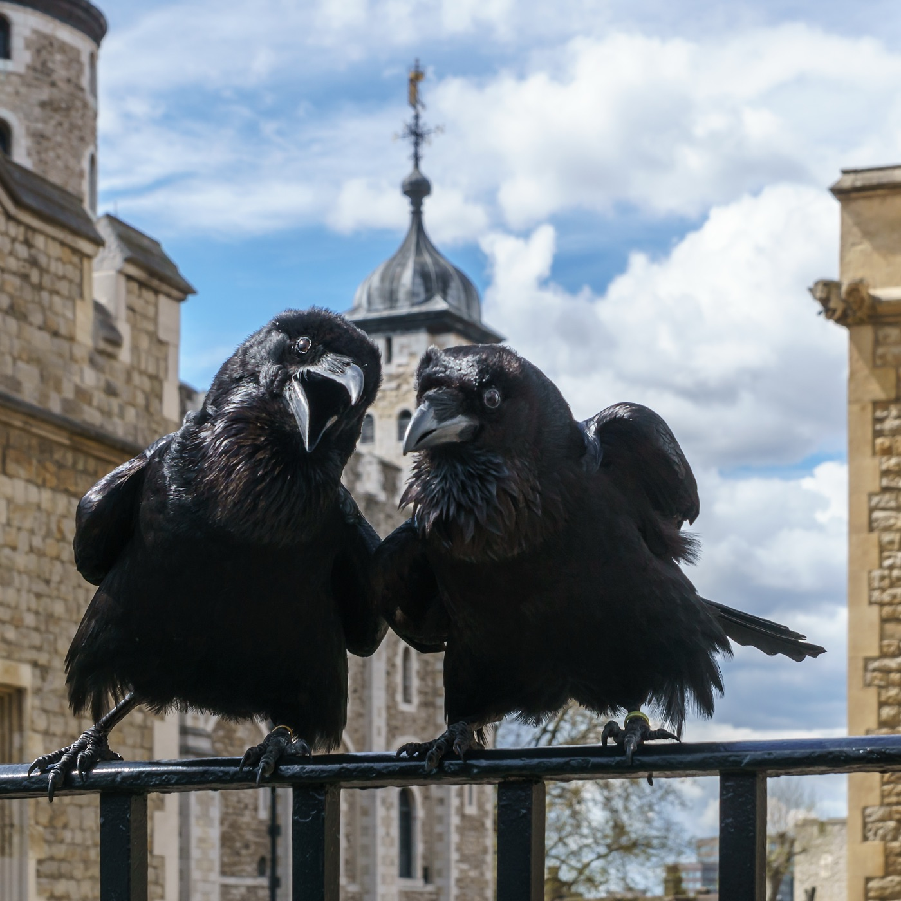
Entrare all'apertura e andare subito ai gioielli, prima che la coda cresca; poi unirsi a un tour degli Yeoman. In febbraio l'ultimo ingresso è alle 15: il pomeriggio è troppo corto per tutto.
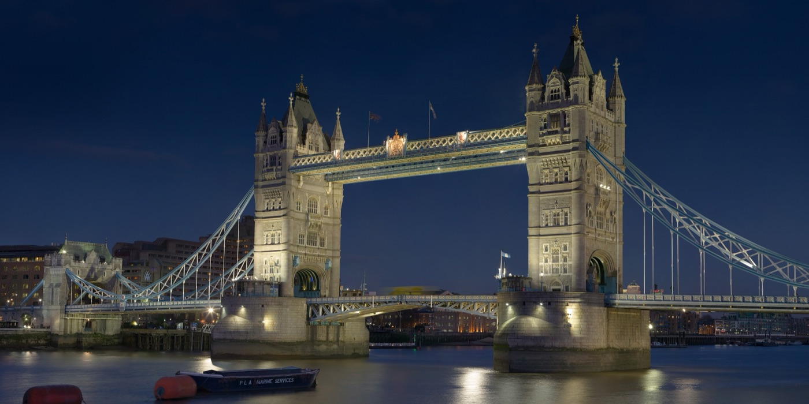
Top sight · 2
Lo chiamano London Bridge in metà del mondo, ma il London Bridge è quello accanto, piatto e anonimo. Questo è Tower Bridge, inaugurato nel 1894.
Fu progettato in stile neogotico perché non stonasse accanto alla Torre, ma sotto la pietra c'è un'ossatura d'acciaio. I due bracci si alzano ancora circa 500 volte l'anno per far passare le navi alte. Attraversarlo a piedi è gratis; il biglietto serve per salire sulle passerelle e scendere nella sala macchine.
Ci vollero otto anni e 432 operai per costruirlo, su progetto dell'architetto Horace Jones e dell'ingegnere John Wolfe Barry. Le passerelle in alto servivano ai pedoni quando il ponte era aperto, ma quasi nessuno ci saliva: furono chiuse nel 1910 e riaperte solo nel 1982 come museo.
Nel 1952 il ponte cominciò ad aprirsi mentre ci passava sopra un autobus a due piani: l'autista, Albert Gunter, accelerò e saltò il varco di quasi un metro. In origine il ponte era marrone scuro; i colori bianco e azzurro arrivano dal Giubileo d'argento della regina, nel 1977.
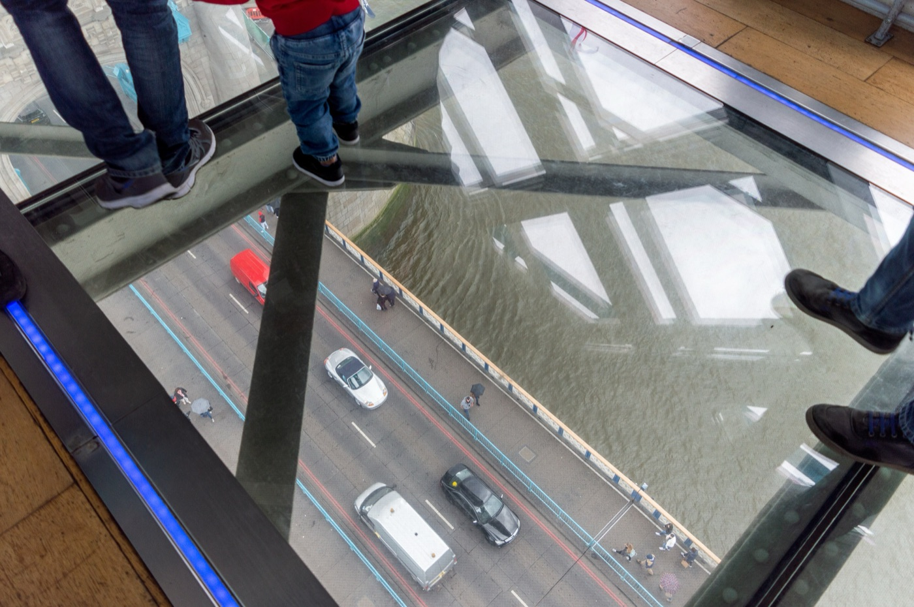
Dal pavimento di vetro si vedono auto e autobus 42 metri più in basso.
Le passerelle alte collegano le due torri e hanno tratti di pavimento trasparente. Poi si scende nelle Engine Rooms, sul lato sud, con le macchine a vapore vittoriane che alzavano il ponte: sono un'uscita separata, non saltatele.
Gli orari in cui si alza il ponte sono online (towerbridge.org.uk/bridge-lifts) e quelli di febbraio escono verso gennaio. Essere sul vetro mentre il ponte si apre sotto è il momento migliore della visita. Entrando verso le 16 si vede anche il tramonto sul fiume.
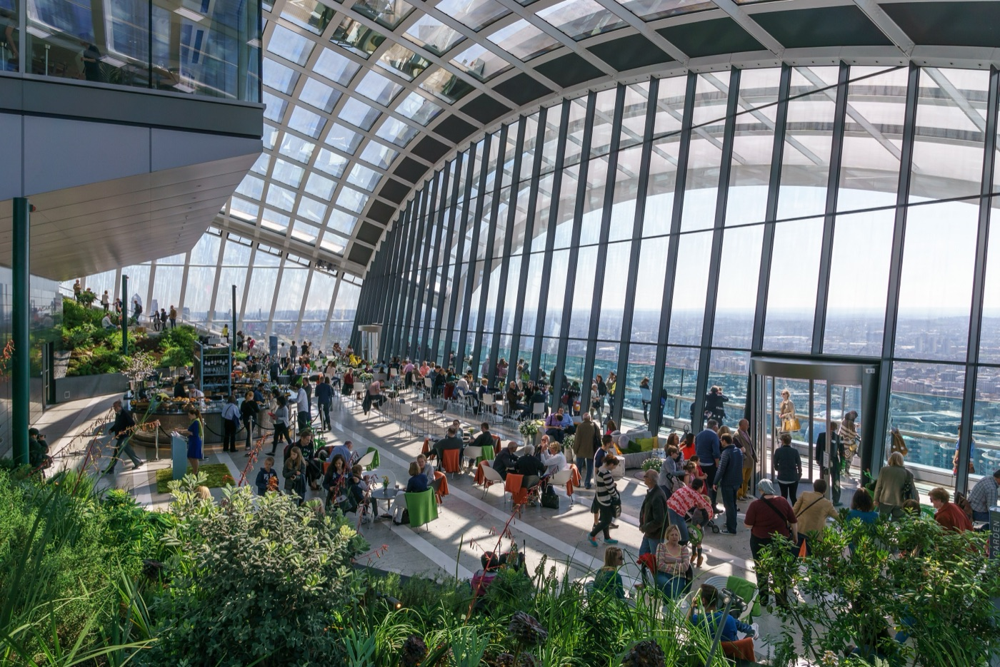
Top sight · 3
Un giardino tropicale sotto una cupola di vetro, al 35° piano, con tutta Londra intorno. E non si paga.
È in cima al 20 Fenchurch Street, il grattacielo che i londinesi chiamano "Walkie Talkie" per la forma che si allarga verso l'alto. Dalla terrazza aperta si vedono lo Shard, Tower Bridge e il fiume; dentro ci sono piante, un bar e un ristorante. La sala è ventilata con l'aria esterna: tenete il cappotto.
Il grattacielo, progettato da Rafael Viñoly, è stato finito nel 2014. Prima ancora di essere completato si era guadagnato un altro soprannome, "Walkie Scorchie": nell'estate del 2013 la facciata curva concentrava i raggi del sole sulla strada e sciolse parti di un'auto parcheggiata in Eastcheap. Per risolvere il problema hanno aggiunto delle lamelle frangisole.
Regole: un adulto può accompagnare al massimo 3 ragazzi sotto i 16 anni; gli adulti portano un documento. Niente valigie, niente cibo da fuori. Se i biglietti sono finiti, un brunch al Darwin Brasserie (sab-dom) include l'ingresso.
La terrazza panoramica gratuita più alta d'Europa, al 58° piano, con ascensori da 41 secondi. Rispetto allo Sky Garden è tutta al chiuso dietro le vetrate, ma non ha limite di tempo. Si prenota solo su horizon22.co.uk, fino a 9 biglietti per prenotazione: entriamo tutti e 8 insieme.
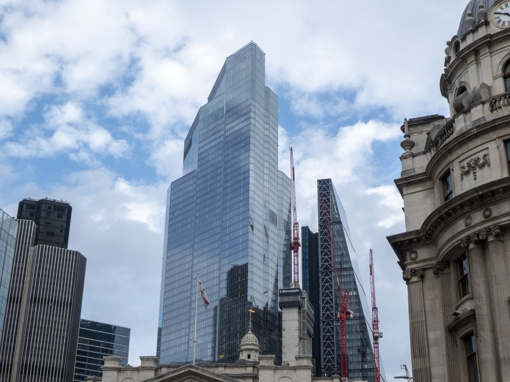
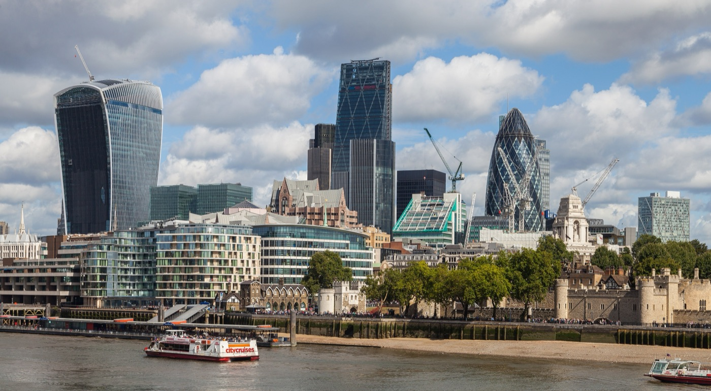
Il Walkie Talkie (a sinistra) e la City dal fiume: lo Sky Garden è nella parte più larga, in cima.
Da vedere
La colonna ricorda il Grande Incendio del 1666, che distrusse quasi tutta la città medievale. È alta 61 metri, quanto la distanza dal forno di Pudding Lane da cui partì il fuoco. Si sale a piedi: 311 gradini su una scala a chiocciola stretta, poi un balcone in gabbia con vista sulla City.
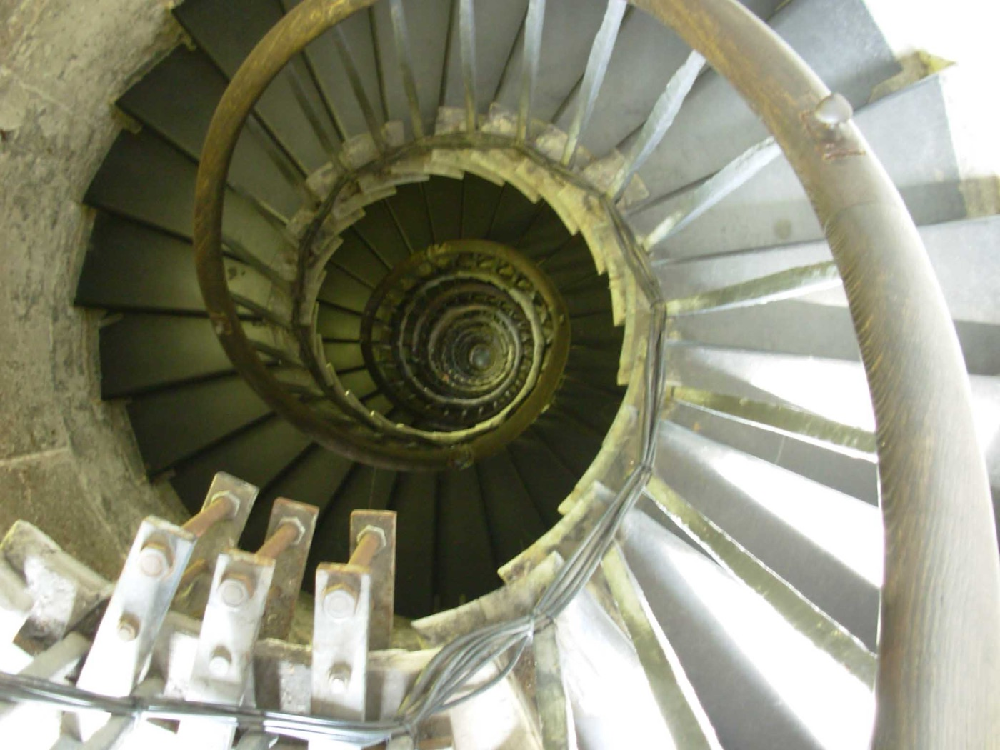
Un mercato coperto vittoriano in ferro e vetro, rosso, crema e oro, costruito nel 1881 dallo stesso architetto di Tower Bridge sopra il foro della Londra romana. Nel primo film di Harry Potter è la strada che porta al Paiolo Magico. Nel weekend è vuoto e silenzioso, perfetto per le foto; nei giorni feriali a pranzo è pieno di impiegati.
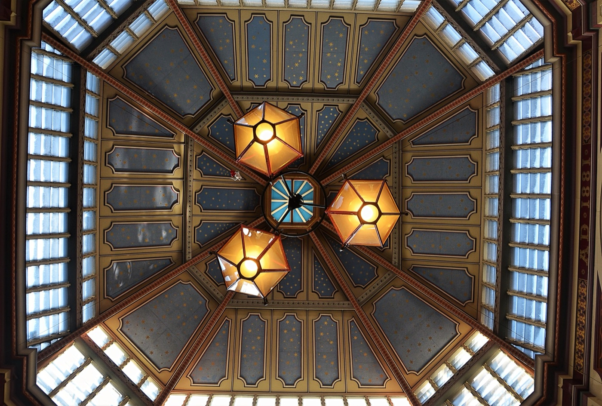
Una chiesa medievale bruciata nel 1666, ricostruita con il campanile di Wren e bombardata nel 1941. Dal 1971 è un giardino pubblico: alberi ed edera dentro le finestre gotiche senza vetri. Uno dei posti più fotografati di Londra.
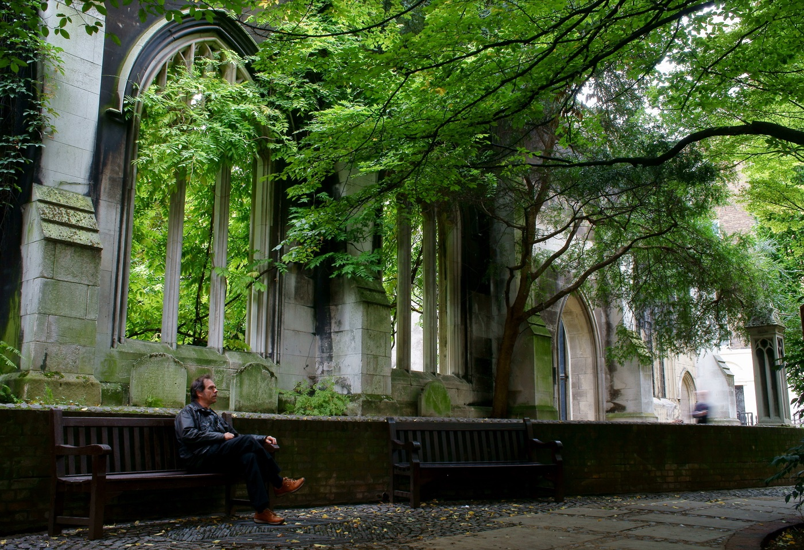
La chiesa più antica della City, fondata nel 675. Dal suo campanile Samuel Pepys guardò bruciare Londra nel 1666. Nella cripta ci sono un pavimento romano e un arco sassone.
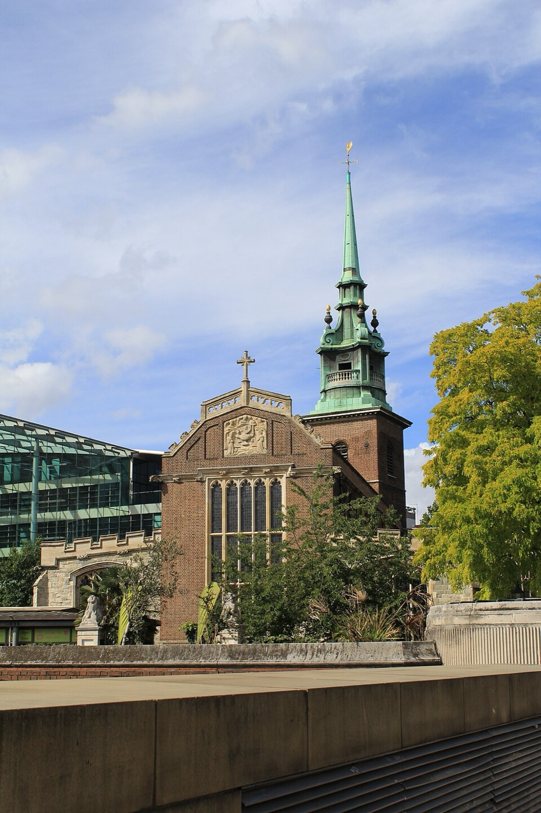
Il palazzo con il colonnato e la torre è l'ex sede del Porto di Londra (1922), oggi un hotel di lusso: in cima, la statua del Padre Tamigi indica il mare con il tridente. Nei giardini di fronte c'era il patibolo di Tower Hill, dove furono decapitati Tommaso Moro e Thomas Cromwell; accanto, il memoriale ai marinai delle due guerre e un pezzo delle mura romane.
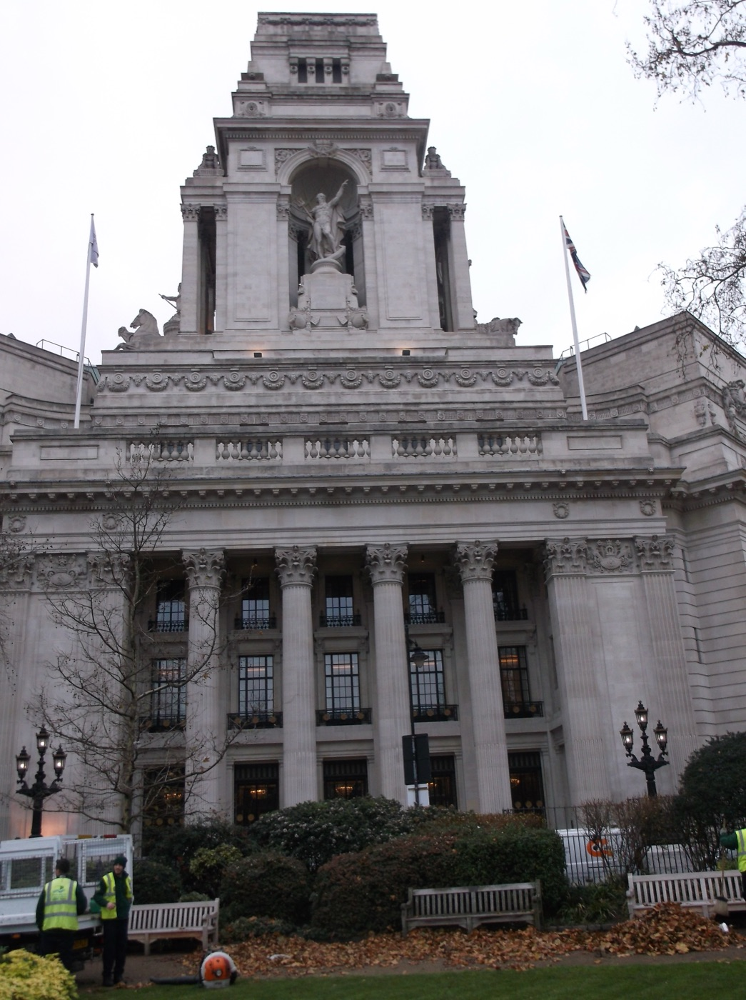
L'unica marina del centro di Londra: barche a vela e yacht tra vecchi magazzini, ristoranti e caffè. Una passeggiata tranquilla di mezz'ora dopo la Torre e il ponte, lontano dalla folla.
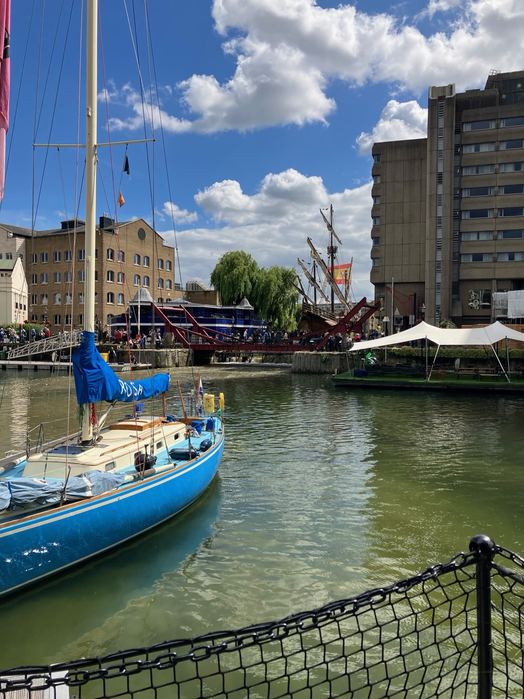
Un grande mercato coperto vittoriano con bancarelle di moda, design e artigianato e, intorno, cucine di strada di tutto il mondo. La domenica è il giorno più vivace e si abbina a Brick Lane.
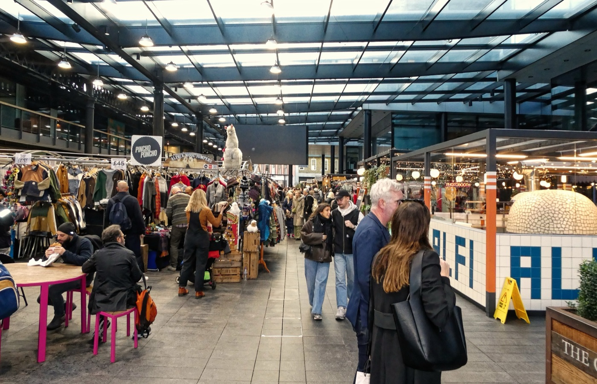
La via del curry e della street art. I murales cambiano di continuo: i più belli sono nelle traverse, Hanbury Street, Fashion Street, Princelet Street, Grimsby Street. Nella vecchia birreria Truman ci sono mercati vintage e un food hall aperti tutti i giorni; la domenica tutto il quartiere diventa un mercato.
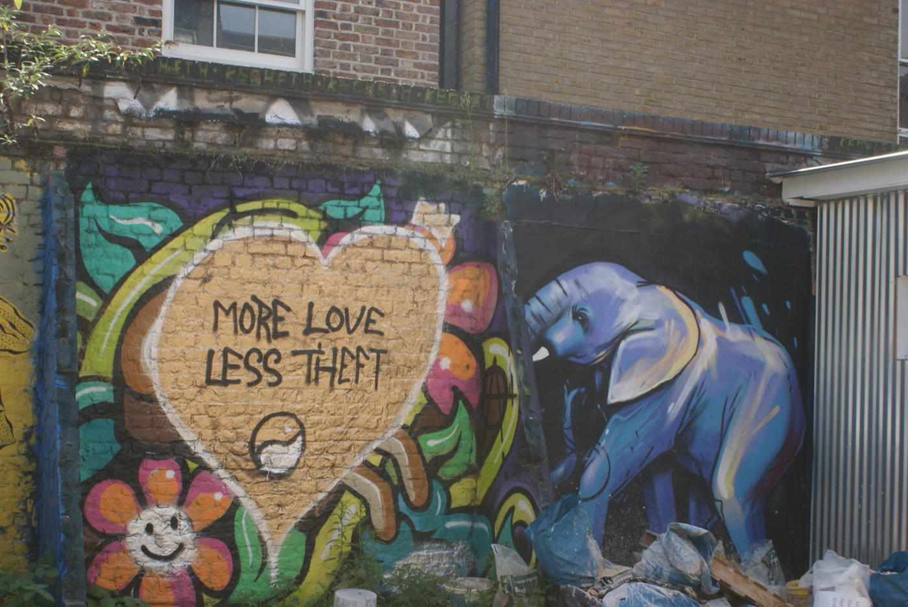
Il mercato storico dell'abbigliamento a buon mercato. Il grande mercato è solo la domenica mattina, più o meno fino alle 14; nei giorni feriali resta qualche banco su Wentworth Street.
Galleria d'arte contemporanea aperta nel 1901: nel 1939 qui fu esposta Guernica di Picasso. Ottimo rifugio se piove. Chiusa il lunedì; la mostra a pagamento costa £16,50 ed è gratis sotto i 16 anni.
Il municipio medievale della City affaccia su una piazza dove una linea scura nel selciato disegna il contorno dell'anfiteatro romano. Sotto la galleria d'arte ci sono i resti veri, scoperti nel 1988, con luci e suoni che ricostruiscono l'arena.
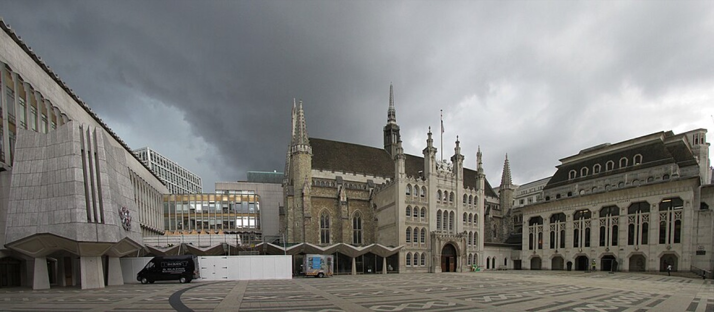
Il museo della banca centrale: monete, banconote, storia della sterlina e, se c'è ancora, il lingotto d'oro vero da 13 chili che si prova a sollevare infilando la mano in una teca. Aperto solo dal lunedì al venerdì, 10-17: per noi lunedì 8 o martedì 9.
La City è costruita sopra la città romana. Ne restano pezzi in vista: le mura accanto alla stazione di Tower Hill, l'anfiteatro sotto Guildhall, il pavimento nella cripta di All Hallows. Leadenhall Market sta sopra il foro e la basilica romana, che era l'edificio più grande a nord delle Alpi.
Passeggiata
Circa 4 km · 3 ore con le soste · meglio sabato, finendo allo Sky Garden al tramonto
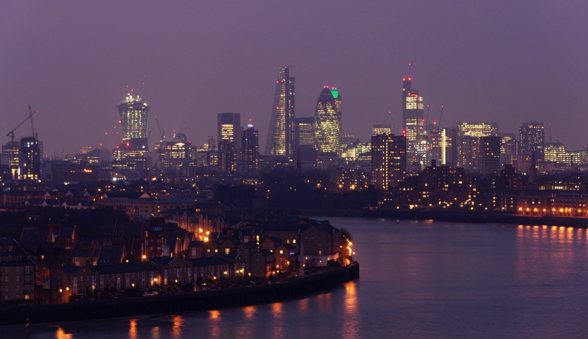
Passeggiata
Circa 3 km · mezza giornata · domenica 10-15, quando sono aperti tutti i mercati
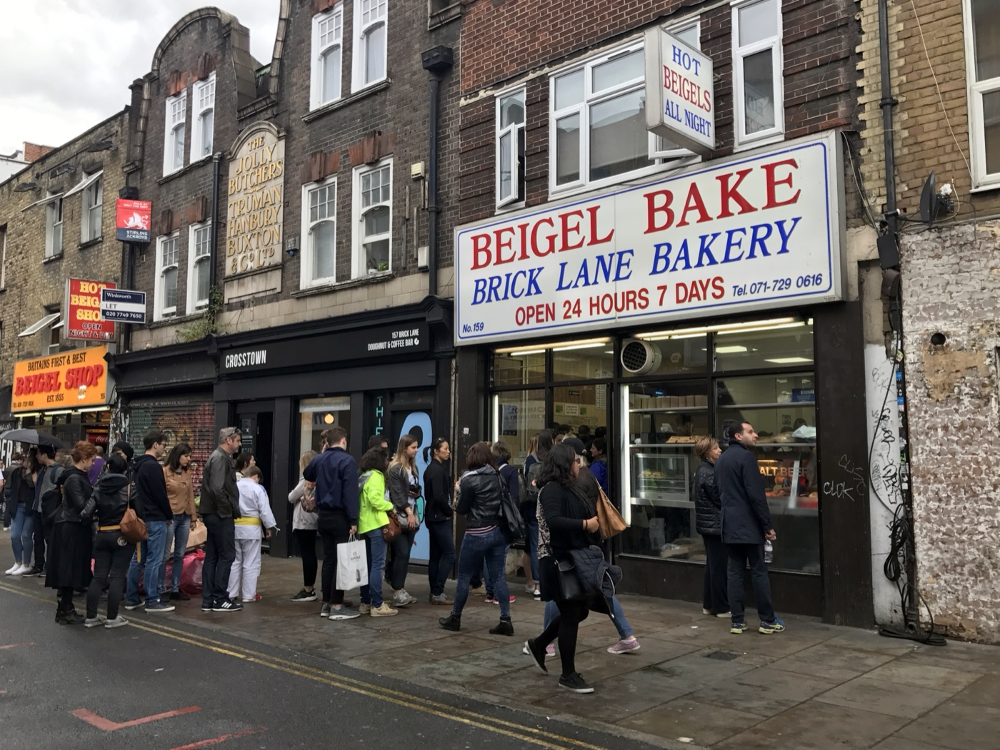
Mangiare
£ meno di £12 a testa · ££ £15-30 · £££ oltre £40
Il locale indiano più amato di Londra, ispirato ai caffè persiani di Bombay: piatti da dividere, naan al formaggio, chai. Dopo le 18 prende prenotazioni solo per gruppi da 6 in su: per noi è perfetto. Si prenota online fino a 4 mesi prima; senza prenotazione la sera si aspetta 30-60 minuti.
Bistecche alla griglia di carbone, tra le migliori della città. Il menu fisso a pranzo e a inizio serata (£26 due portate, £30 tre) lo rende abbordabile. Per i gruppi c'è un modulo di richiesta sul sito; la domenica fanno il roast.
Fish and chips come negli anni '50, servito nella carta stampata come i giornali di una volta. Si prenota dal sito. Una tappa naturale nella passeggiata della domenica.
Un'istituzione di Whitechapel: cucina punjabi, costolette d'agnello alla griglia, sala rumorosa e sempre piena. Le bevande si portano da fuori. Si prenota per telefono (020 7247 9543) o online.
Più di 40 banchi di cucina di strada al coperto e furgoni nel cortile: ognuno sceglie il suo, che con le ragazze è la soluzione più semplice. Upmarket lun-sab 11-18, dom 10-18; Ely's Yard tutti i giorni 11-23. Non si prenota.
A Londra si pranza tra le 12 e le 14 e si cena presto, tra le 18 e le 21: dopo le 21:30 molte cucine chiudono, soprattutto la domenica. Nella City nel weekend molti locali sono chiusi; l'East End invece è aperto tutti i giorni.
Dolci, pub e shopping
Bagel bolliti e poi cotti al forno, sfornati giorno e notte. Il classico è il salt beef, manzo salato caldo con senape: circa £7-9. Quelli semplici costano molto meno. C'è sempre fila, ma scorre veloce.
Un pub vittoriano sotto le volte del mercato, con il roast la domenica. Di solito i ragazzi con gli adulti sono ammessi per mangiare: chiedete all'ingresso.
Old Spitalfields Market: abbigliamento di piccoli marchi, gioielli, design.
Brick Lane Vintage Market (85 Brick Lane): vintage anni '70-'90, tutti i giorni.
Leadenhall Market: negozi aperti soprattutto nei giorni feriali.
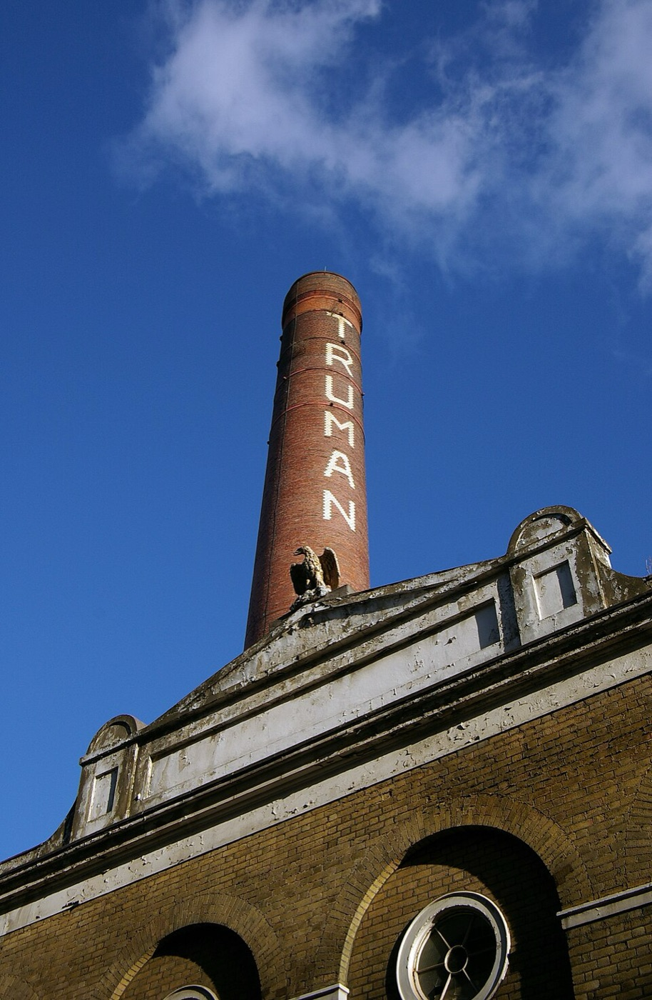
La vecchia birreria Truman su Brick Lane: dentro ci sono i mercati vintage e il food hall.
Sotto i 18 anni non si può comprare alcol. I minori di 16 anni possono entrare in un pub solo con un adulto, e ogni locale decide se accettarli e fino a che ora: di giorno e per mangiare quasi sempre sì, la sera spesso no. Chiedete al banco prima di sedervi.
Il consiglio di TikTok
Il colonnato prende una luce bellissima nelle prime ore. Prima tappa perfetta uscendo dall'hotel, prima della Torre.
Prima il walk-in, se c'è posto e non dopo le 17 nei giorni feriali; oppure Horizon 22, che non ha limite di tempo.
Il pavimento di vetro vale il biglietto. Nei video costava £15,80; oggi è £18 per gli adulti.
Dai video di @thevisuallife, @spensierati.in.viaggio e @volga_londonstories, girati da Miriam il 17 ottobre 2026.
Prima di partire
Prezzi e orari (in questa guida sono quelli di ottobre 2026), gli orari di apertura del ponte, l'ascensore dello Sky Garden (a ottobre uno era fuori servizio), le mostre della Whitechapel Gallery e il lingotto del Bank of England Museum.
Crediti fotografici
Foto da Wikimedia Commons, pubblicate con licenze Creative Commons o in pubblico dominio. Mappe: Esri, HERE, Garmin e i contributori di OpenStreetMap. Linee della metro: OpenStreetMap.